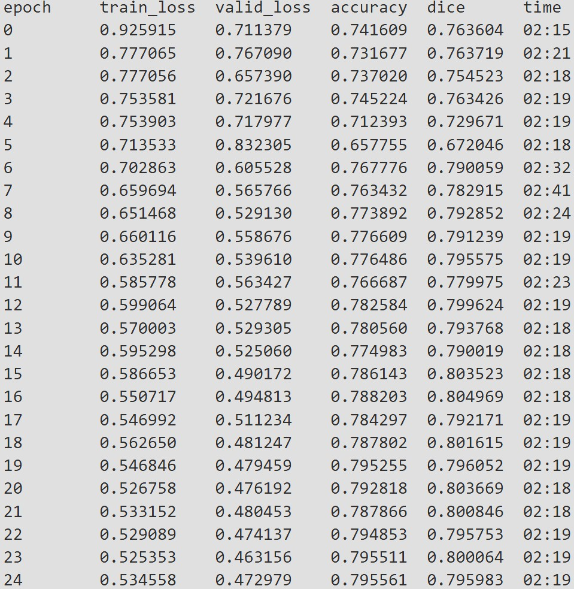
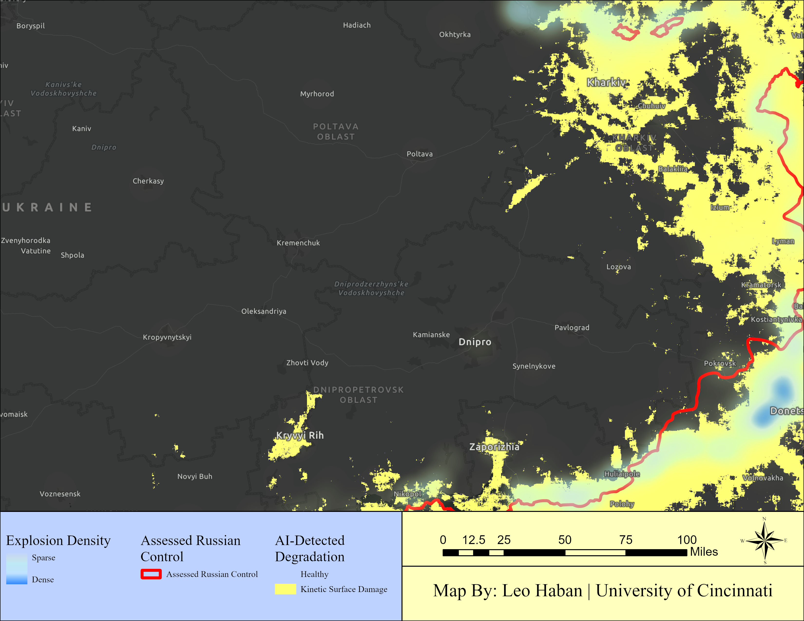

Ecological Footprint of Kinetic Conflict
Mapping physical surface degradation in the Ukrainian Chernozem belt using Sentinel-2 multispectral imagery and deep learning.
Project Scope & Objective
The ongoing conflict in Eastern Europe has caused unprecedented disruption to one of the world's most critical agricultural regions. While much reporting focuses on immediate geopolitical impacts, the long-term ecological scarring of the landscape remains difficult to quantify at scale. This project engineered an automated, deep-learning-driven spatial analysis pipeline to map and quantify kinetic surface damage across the front lines.
Measuring the environmental impact of warfare via remote sensing requires strict parameters. Early iterations of this research explored mapping invisible chemical toxicity. However, to ensure absolute scientific rigor, the project scope was deliberately refined. The primary objective was to train a neural network to exclusively identify undeniable, physical terrain degradation, separating kinetic conflict scars from all other land-cover types.

Methodology & Data Architecture
The workflow required bridging traditional Geographic Information Systems (GIS) with advanced machine learning computer vision. The analysis utilized 20-meter resolution Sentinel-2 multispectral imagery, selecting a mid-summer temporal snapshot (July 2024 composite) to maximize the visual and spectral contrast between healthy vegetation and scorched earth.
The project utilized a U-Net semantic segmentation architecture with a ResNet50 backbone, processed via PyTorch on a local GPU environment. U-Net was chosen for its ability to evaluate imagery pixel-by-pixel, making it ideal for the organic, chaotic geometry of conflict zones.
To optimize model performance and ensure high spatial accuracy, the workflow was engineered around a strict Binary Classification (Non-Degraded vs. Kinetic Surface Damage) using Dense Block Labeling. By forcing edge-to-edge classification within training blocks, the model successfully isolated the spectral boundary between active agricultural chlorophyll and physical destruction.

Results & Model Evaluation
The binary spatial model yielded a highly robust and defensible algorithm.
The final model achieved a sustained Dice Coefficient of ~0.80 (80%) alongside a stabilized validation loss curve. In the context of semantic segmentation for highly irregular, non-geometric environmental features, an 80% overlap represents a high degree of spatial accuracy.
When deployed across the regional July 2024 composite, the AI successfully generated a continuous vector footprint of physical degradation. The predicted destruction layer perfectly tracked the active front line, directly correlating with documented, high-density kinetic explosion data without generating significant false positives in non-combat zones.

Geographic Implications & Conclusion
The resulting spatial data provides a stark visualization of the conflict's physical footprint within the Chernozem soil belt—some of the most fertile agricultural land on Earth. The capacity to autonomously generate these degradation maps removes the bottleneck of manual, human-digitized damage assessments.
This methodology provides environmental scientists, agricultural economists, and post-conflict recovery agencies with a scalable tool to calculate the exact acreage of unworkable, physically destroyed land, allowing for more precise ecological remediation planning. By rigorously defining the scientific scope and adapting the data architecture to match the physical reality on the ground, this project proves neural networks can be trained to look past the noise of a landscape and accurately map the scars of human conflict.